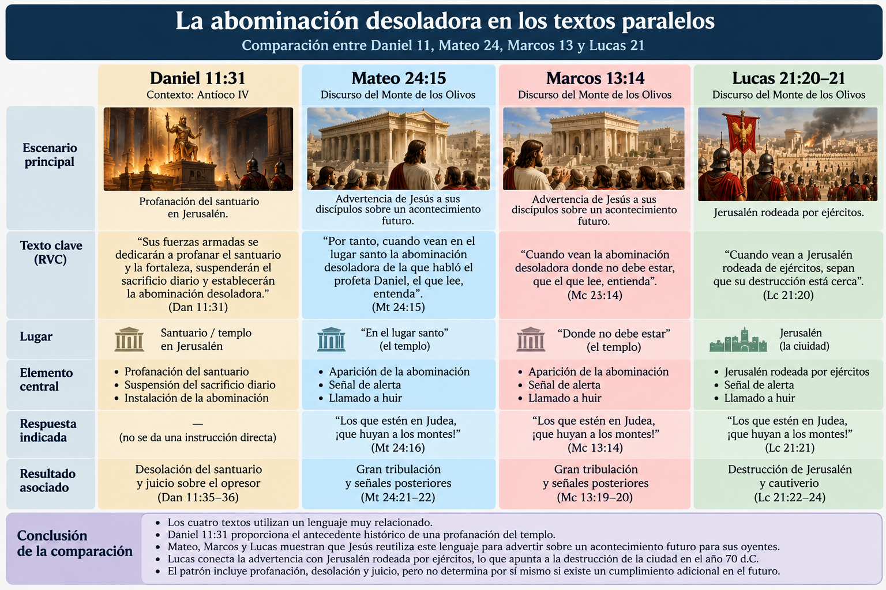
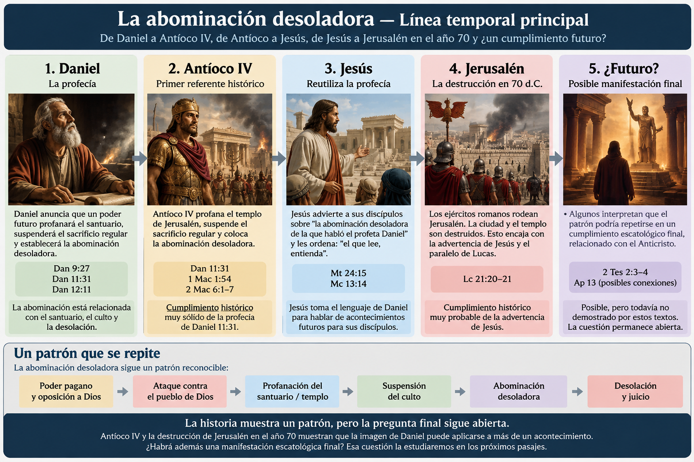
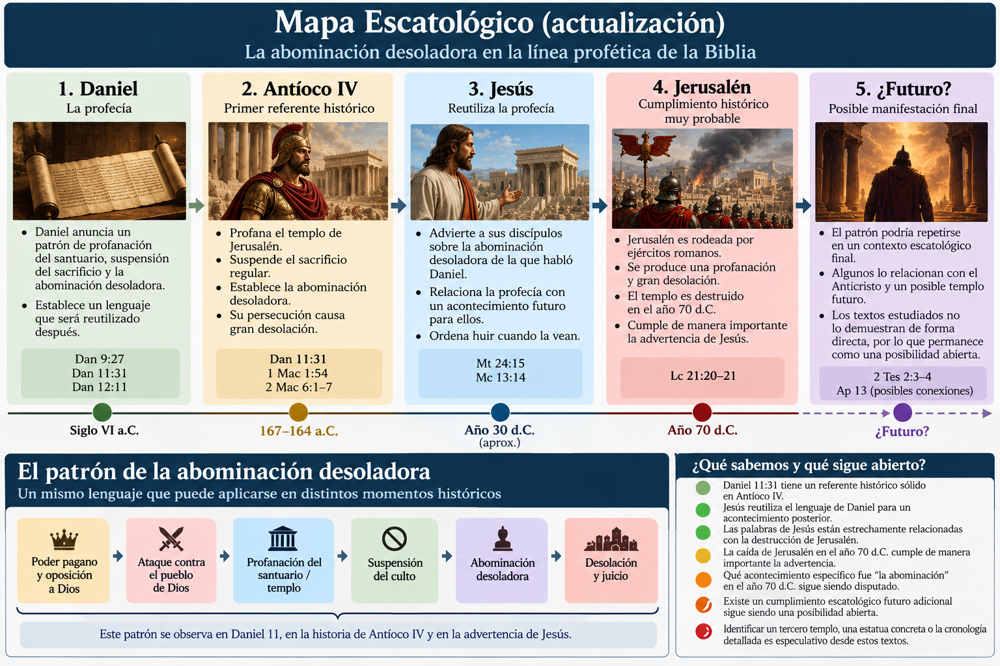
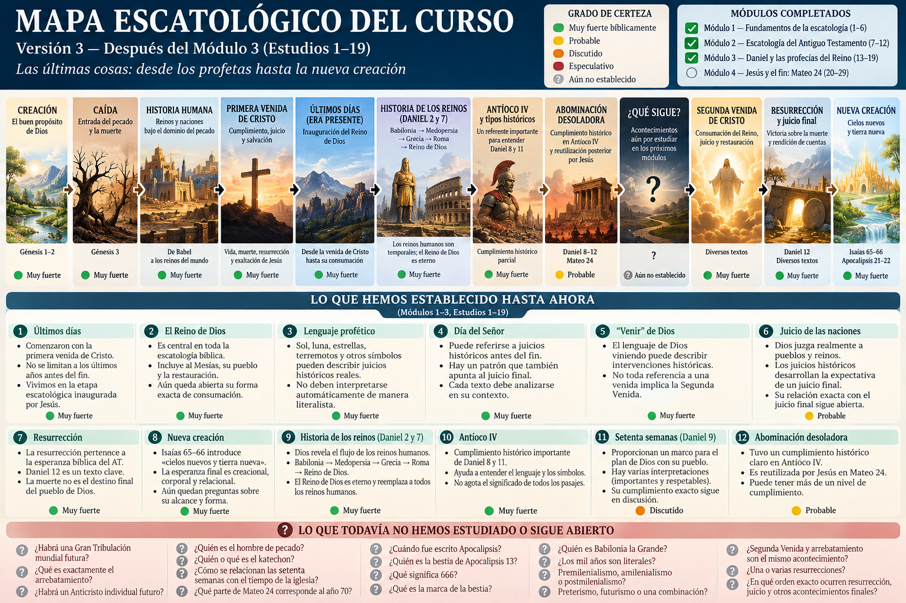

🎯 Pregunta central
Pocas expresiones proféticas han generado tantas interpretaciones como “la abominación desoladora”.
“Por tanto, cuando vean en el lugar santo la abominación desoladora de la que habló el profeta Daniel...”
En Daniel, especialmente en el capítulo 11, la expresión aparece dentro del conflicto relacionado con Antíoco IV Epífanes. Sin embargo, cuando Jesús habla, Antíoco llevaba casi dos siglos muerto.
¿Qué es exactamente la abominación desoladora? ¿Fue la profanación realizada por Antíoco? ¿Jesús anunciaba la destrucción de Jerusalén en el año 70 d.C.? ¿Hablaba además de un acontecimiento escatológico futuro? ¿O el patrón puede repetirse en más de un momento histórico?
No comenzaremos escogiendo un sistema. Seguiremos el texto.
1. ¿Dónde aparece en Daniel?
La expresión aparece principalmente en Daniel 9:27, 11:31 y 12:11. Daniel 11:31 es especialmente concreto: fuerzas profanan el santuario, eliminan el sacrificio regular y colocan la abominación desoladora.
El patrón es claro: santuario → profanación → culto/sacrificios → abominación → desolación.
2. ¿Qué significa “abominación”?
Daniel 11:31 utiliza la expresión hebrea שִׁקּוּץ מְשֹׁומֵם (šiqqûṣ məšōmēm). Šiqqûṣ puede describir algo detestable o abominable y en el Antiguo Testamento aparece especialmente asociado con la idolatría. La segunda palabra pertenece al campo de la desolación o devastación.
Por eso, la expresión describe mejor una profanación sacrílega asociada con la desolación del santuario que una atrocidad política genérica.
3. El primer gran referente histórico: Antíoco IV
Daniel 11:31 conecta explícitamente la profanación del santuario, la eliminación del sacrificio y la instalación de la abominación. Durante la persecución de Antíoco IV Epífanes, el templo de Jerusalén sufrió precisamente una crisis de este tipo.
1 Macabeos 1:54 utiliza el lenguaje de la “abominación desoladora”, mientras que 2 Macabeos 6 describe la profanación del templo y su asociación con Zeus Olímpico.
4. Entonces aparece un problema: Jesús
“Cuando vean... la abominación desoladora de la que habló el profeta Daniel...”
Jesús invita a sus discípulos a leer Daniel para interpretar un acontecimiento que, desde la perspectiva de ellos, todavía era futuro. Esto significa que Antíoco no agota toda la utilización bíblica del concepto.
5. El contexto de Mateo 24
El discurso comienza con el templo de Jerusalén. Jesús anuncia su destrucción y, más adelante, habla de la abominación desoladora y ordena que quienes estén en Judea huyan.
Marcos presenta prácticamente la misma advertencia: cuando vean la abominación “donde no debe estar”, quienes estén en Judea deben huir.
El escenario mantiene unidos templo → Judea → profanación/desolación → huida.
6. La pista decisiva de Lucas
Mateo 24:15: abominación desoladora → Judea debe huir.
Marcos 13:14: abominación donde no debe estar → Judea debe huir.
Lucas 21:20–21: Jerusalén rodeada por ejércitos → Judea debe huir.
Lucas formula la advertencia paralela mediante la imagen de Jerusalén rodeada por ejércitos. Esto constituye una de las evidencias más importantes del estudio y encaja naturalmente con la guerra judía contra Roma y la destrucción de Jerusalén y del templo en el año 70 d.C.

7. ¿Qué fue exactamente la abominación en el año 70?
Se han propuesto los ejércitos romanos, sus estandartes paganos, la entrada en el área sagrada, otras profanaciones ocurridas durante la guerra o el conjunto de acontecimientos que culminaron en la desolación del templo.
8. Un patrón comienza a aparecer
Antíoco y la crisis anunciada por Jesús no necesitan ser acontecimientos idénticos. La reutilización del lenguaje permite reconocer un patrón de profanación y desolación.

9. ¿Hay además una abominación desoladora futura?
🟦 Interpretación preterista
Entiende Mateo 24:15 principalmente en relación con la caída de Jerusalén en el año 70. Su argumento más fuerte es el contexto inmediato: templo, Jerusalén, Judea, huida, ejércitos y desolación.
Fortaleza: respeta muy bien el contexto histórico inmediato.
Dificultad: debe explicar cómo se relacionan con ese acontecimiento las secciones posteriores del discurso, especialmente el lenguaje sobre la venida del Hijo del Hombre.
🟪 Interpretación futurista
Entiende que la expresión apunta finalmente hacia una profanación escatológica futura, frecuentemente asociada con el Anticristo, y suele relacionarla con 2 Tesalonicenses 2 y Apocalipsis 13.
Fortaleza: reconoce que el NT conserva un fuerte patrón de oposición final contra Dios y su pueblo.
Dificultad: Mateo 24:15 no menciona explícitamente al Anticristo ni explica directamente una reconstrucción futura del templo.
🟨 Cumplimiento múltiple o tipológico
Propone un patrón: Antíoco IV → Jerusalén 70 d.C. → posible manifestación escatológica final.
Fortaleza: toma en serio que Jesús reutiliza una imagen profética anterior.
Riesgo: convertir automáticamente cada etapa en tipo de otra sin suficiente evidencia textual.
10. ¿Y el “Anticristo”?
Mateo 24:15 no utiliza la palabra Anticristo. Daniel 11:31 tampoco. Eso no impide una posible conexión teológica posterior, pero significa que no debemos introducir esa figura en el versículo antes de demostrar la conexión.
Más adelante será necesario estudiar 2 Tesalonicenses 2, 1–2 Juan, Apocalipsis 13 y otros pasajes relevantes antes de preguntar si convergen en una misma figura.
11. Algo todavía más importante: Jesús es mayor que el templo
Daniel contempla la profanación del santuario. Antíoco profana el templo. Jesús anuncia que el segundo templo también será destruido. Pero el NT desplaza progresivamente el centro de gravedad hacia Cristo y la presencia de Dios con su pueblo.
Esto no elimina automáticamente toda posible función escatológica de Jerusalén. Pero la esperanza cristiana final no consiste simplemente en recuperar un edificio sagrado: culmina en Dios habitando definitivamente con su pueblo por medio de Cristo.
Por eso la abominación desoladora es importante, pero no es el centro de la escatología cristiana. Cristo lo es.
12. ¿Qué podemos afirmar hasta ahora?
| Afirmación | Evaluación |
|---|---|
| Daniel relaciona la abominación con profanación del santuario y supresión del sacrificio | 🟢 Muy fuerte |
| Daniel 11:31 tiene un referente histórico sólido en Antíoco IV | 🟢 Muy fuerte |
| Jesús reutiliza conscientemente el lenguaje de Daniel | 🟢 Muy fuerte |
| Para Jesús, la profecía tenía relevancia para acontecimientos posteriores a Antíoco | 🟢 Muy fuerte |
| Mateo 24 está estrechamente relacionado con Jerusalén, Judea y el templo | 🟢 Muy fuerte |
| Lucas relaciona la advertencia paralela con Jerusalén rodeada por ejércitos | 🟢 Muy fuerte |
| La caída de Jerusalén en 70 d.C. cumple de manera importante la advertencia de Jesús | 🟡 Probable |
| Podemos identificar con absoluta precisión qué elemento romano fue “la abominación” | 🟠 Disputado |
| Mateo 24:15 posee además un cumplimiento escatológico futuro | 🟠 Disputado |
| Ese cumplimiento requiere necesariamente un tercer templo reconstruido | 🟠 Disputado |
| La abominación será una estatua concreta del Anticristo dentro de ese templo | 🔴 Especulativo desde estos textos solos |
🧭 Conclusión
Daniel → Antíoco IV es una conexión históricamente muy fuerte. Pero Jesús demuestra que Antíoco no agotó el potencial de la imagen, porque reutiliza explícitamente la profecía para advertir a sus discípulos.
El paralelo de Lucas proporciona una pista especialmente importante: la advertencia está estrechamente relacionada con Jerusalén rodeada por ejércitos y su posterior desolación.
Daniel / Antíoco IV
↓
🟢 Primer referente histórico fuerte
Jesús reutiliza Daniel
↓
nueva profanación/desolación
Jerusalén / 70 d.C.
↓
🟡 cumplimiento histórico muy probable
¿Manifestación escatológica final?
↓
❓ 🟠 posible, pero todavía no demostrada
La última pregunta debe permanecer abierta hasta estudiar el discurso del Monte de los Olivos, 2 Tesalonicenses y Apocalipsis con mayor profundidad.
🧩 Actualización del Mapa Escatológico
El mapa incorpora ahora el patrón de la profanación del santuario sin dibujar todavía una flecha obligatoria hacia “Anticristo + tercer templo”. Esa conexión permanece pendiente de demostración.

🧩 Actualización del Mapa Escatológico global
